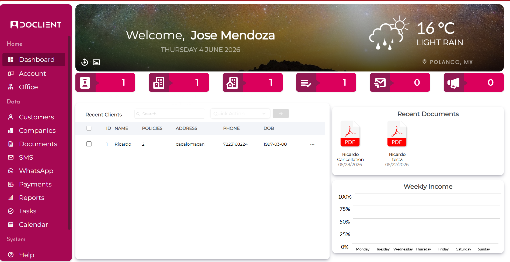
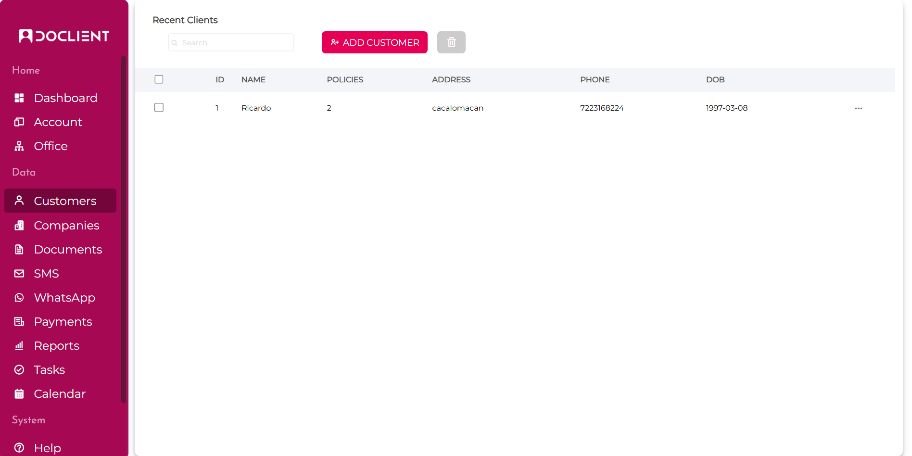
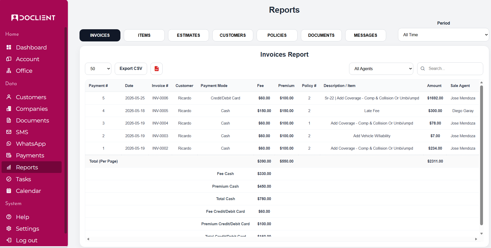

CRM empresarial con Laravel
Laravel / PHP / MySQLSistema CRM para administración de clientes, pólizas, documentos, pagos, reportes y comunicación mediante SMS/WhatsApp. Incluye autenticación multiusuario, control de sesiones, límites por plan, generación de documentos PDF y módulos administrativos.



- Gestión de clientes, pólizas, invoices, payments, documentos y reportes.
- Integración con Twilio para mensajería SMS/WhatsApp.
- Editor de plantillas PDF con campos dinámicos y firma electrónica.
- Control de usuarios, subusuarios, permisos y sesiones persistentes.
Laravel · PHP · MySQL · JavaScript · Twilio API · Dompdf · Git